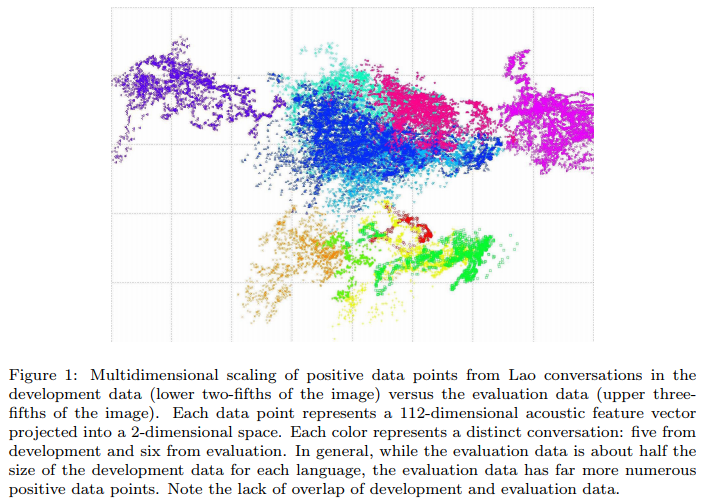
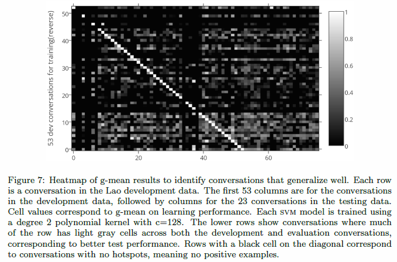
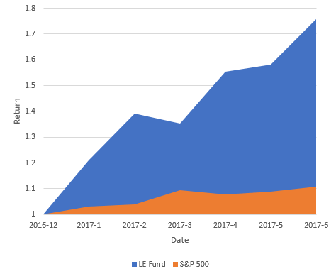
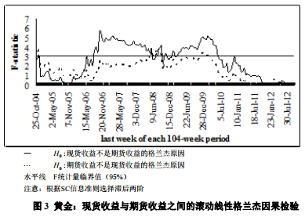

P.AI
Github LinkP.AI project aims to develop an AI pet doctor which can automated diagnose pet's potential disease based on owner's description of symptoms.
Keywords: Natural Language Process, Deep Learning, tfidf, BM25, Word2vec, Recurrent Neural Network
BABEL
Project HomepageThe Babel Program is developing agile and robust speech recognition technology that can be rapidly applied to any human language in order to provide effective search capability for analysts to efficiently process massive amounts of real-world recorded speech.
Publication: Data Selection for Prediction of a Hotspot Pattern in Keyword Search Results---- Journal of Computer Speech and Language [download]
Keywords: Machine Learning, Stochastic Process, Self-exciting Point Process, Adaboost, Multilayer Perception, SVM, Multidimensional Scaling
 LE Fund
LE Fund WebsiteThere are one automated trading strategy in production and two under development. The detailed information can be funded in trading section. In 2016, the fund achieve 117% annual return.
Keywords: Deep Learning, GPU
FANTA Search
Project Link No Long WorkingFANTA Search is Intelligent makeup recommendation website for women and was developed during the Hackathon held by Cornell University. The system can match users' desciption of their age, race, skin type, skin problem and other information with millions Sephora reviews.
Keywords: Proportional Odds Model, Web Development, tfidf, Sensitivity Analysis
Morgan Stanley SM Competition Project
The project aims to develop a market making strategy. I used Hawkes Process to model the dynamics of limit orders, market order and cancellations. Over 120 features from tick-level data including linear, quadratic trend of price movement and spread change, market intensity were extracted. The the machine learning model was used to predict short term price dynamics.
Keywords: Machine Learning, Gradient Boosting Regression, Feature Engineering, High Frequency Trading
Zhejiang Natural Science Foundation of China
Implied Information in Term Structure of Future Price and Its Application
Publication: Price Discovery Function of Precious Metals Future Market - Based on Non-parametric Causality Test [download]Keywords: Time Series Analysis, Granger Causality, Non-parametric Causality
